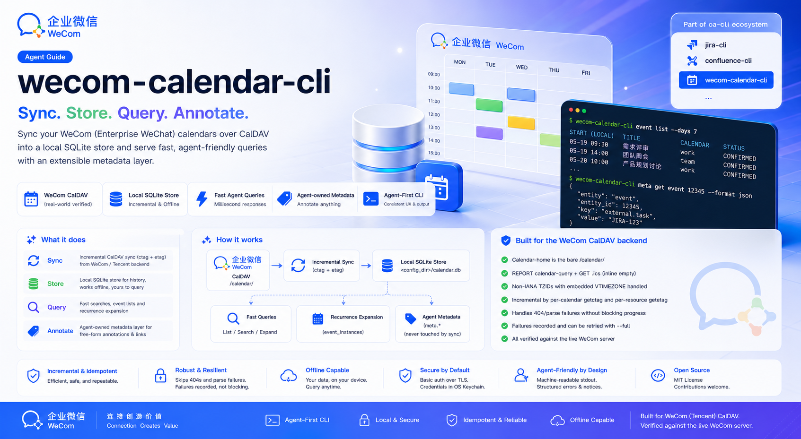

Sync WeCom calendars into a local store and query them from your terminal — built for coding agents.

Sync once, query offline, and annotate events with output a coding agent can act on.
Pull CalDAV changes into SQLite by per-calendar change-tag — unchanged calendars are skipped, only moved events re-fetched. Idempotent, with --full and --dry-run.
List events in any --since/--until window straight from the local store — recurring events expanded per occurrence, cross-calendar duplicates removed.
Attach free-form annotations to events by UID — namespaces, keys, JSON values — to classify them or link them to external tasks. Sync never touches them, so they survive every re-sync.
A stateful SQLite mirror you can query offline and annotate. Deleted events are soft-deleted (tombstoned), keeping history — and its metadata — resolvable.
JSON by default, with structured errors — categories, exit codes and recovery hints a coding agent can branch on, and a stale notice when the store falls behind.
The non-standard Tencent backend — bare /calendar/ home, per-.ics GET bodies, non-IANA embedded TZIDs — is handled for you. Credentials live in the OS keychain.
Install with npm, then finish setup in two steps — deploy the Skill, then turn on shell completion.
# recommended — fetches the prebuilt binary for your platform
npm install -g @angelmsger/wecom-calendar-cli
Other methods — go install, a source build, or a prebuilt binary from the
Releases page.
Then finish setup:
A wecom-calendar Skill is embedded in the binary. It detects your coding agent — Claude Code, Codex — and installs for each:
$ wecom-calendar-cli skill installCompletes subcommands, flag values and live calendar ids. Load it once:
$ source <(wecom-calendar-cli completion bash)Credential note. Auth is HTTP Basic — your WeCom email plus an app-specific CalDAV password from the WeCom mobile app (Workbench → Calendar → settings → Sync to other calendars). Fetching a new one invalidates the previous.
Configure a server, sync into the local store, then query and annotate.
# configure, then verify connectivity $ wecom-calendar-cli config init $ wecom-calendar-cli doctor # pull calendars + events into the local store, then query a window $ wecom-calendar-cli sync $ wecom-calendar-cli event list --since 2026-07-01 --until 2026-07-31 # annotate an event (uid from an event-list item) and link it to a task $ wecom-calendar-cli meta set <uid> task feishu_project "6949886165" --source agent $ wecom-calendar-cli meta get <uid>
Sync, query, annotate — plus the family's setup and diagnostics. Every flag and example lives in the full CLI reference.
Pull CalDAV changes into the local store — incremental, idempotent, with --full and --dry-run.
List calendars from the store, or re-list from the server with --refresh.
Query events in a --since/--until window.
Set, get, list and delete the agent-owned metadata layer, keyed by event UID.
configSetup wizard, plus multi-server context management.
authInspect and manage stored credentials (WeCom email + CalDAV password).
doctorDiagnose configuration, credentials, connectivity and store freshness.